Hello world! My name is Kendra, and I'm a very recent transplant to Denver; I actually just moved here on April 30 from Seattle. I've always wanted to explore a new place, and I can't wait to learn how to code in this great city!
The PNW
I was born and raised in Issaquah, a suburban city on the east side of Seattle. I went to college at Western Washington University (WWU) in Bellingham. After graduating, I moved to Seattle and spent three years there working at Nordstrom's corporate headquarters and enjoying Seattle life.
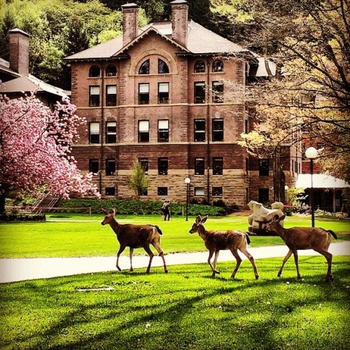
WWU
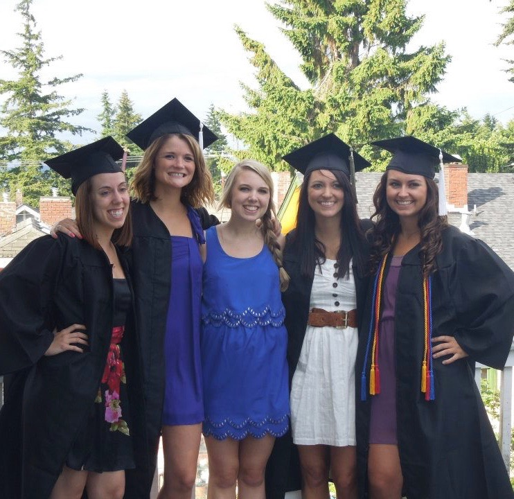
Graduating from WWU
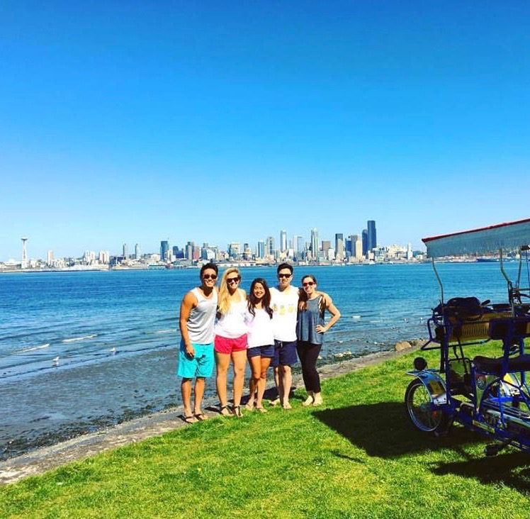
Friends in Seattle
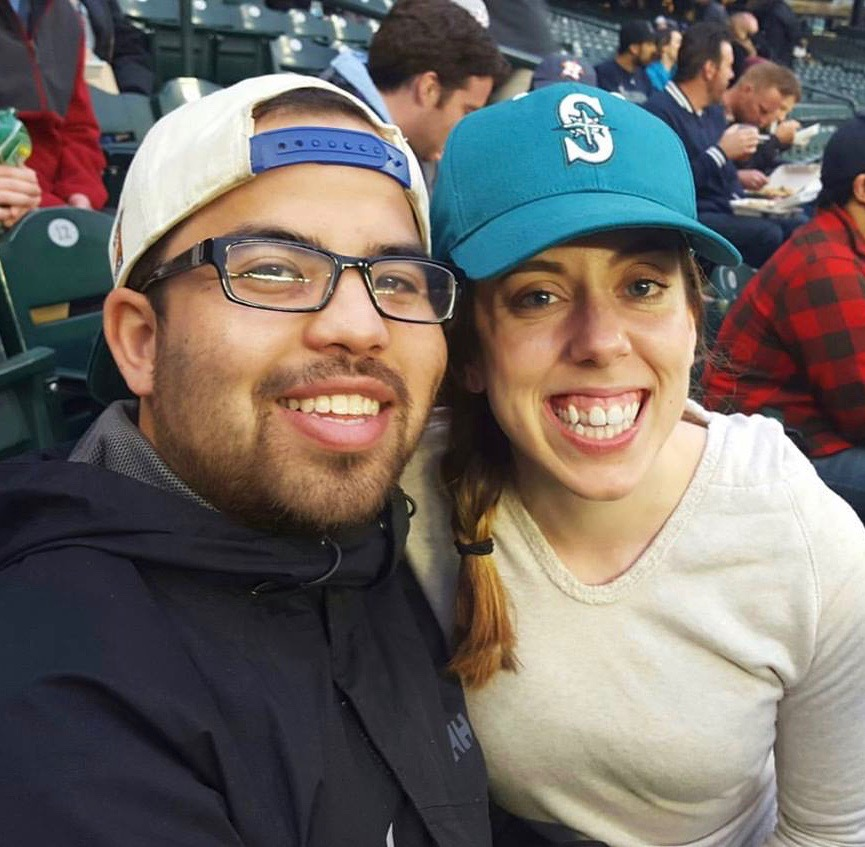
Mariners Pride
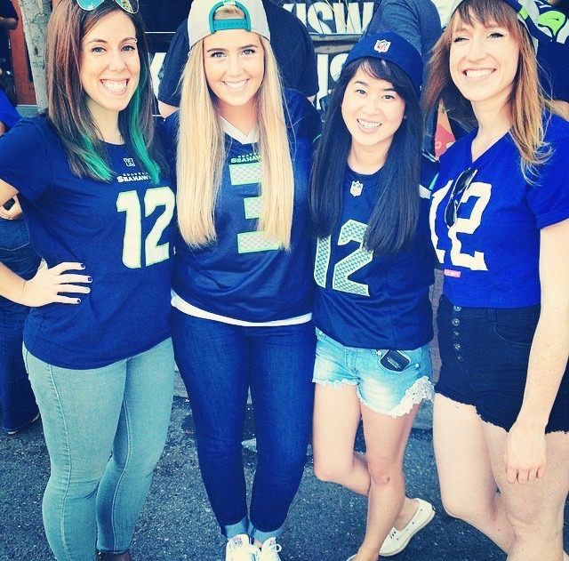
Go Hawks!
Family
My parents are retired and live in the country with our family dog, Dodger (the little gremlin pictured below). My sister and her husband live just 5 minutes away from my parents with their three sons. My nephews are three of the wildest, most wonderful kids ever (I might be a little biased) and I feel so lucky to have an amazing family!
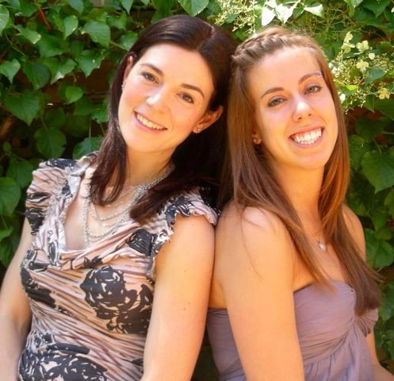
My sister and I
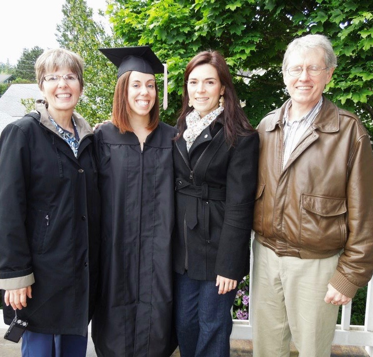
The fam celebrating graduation
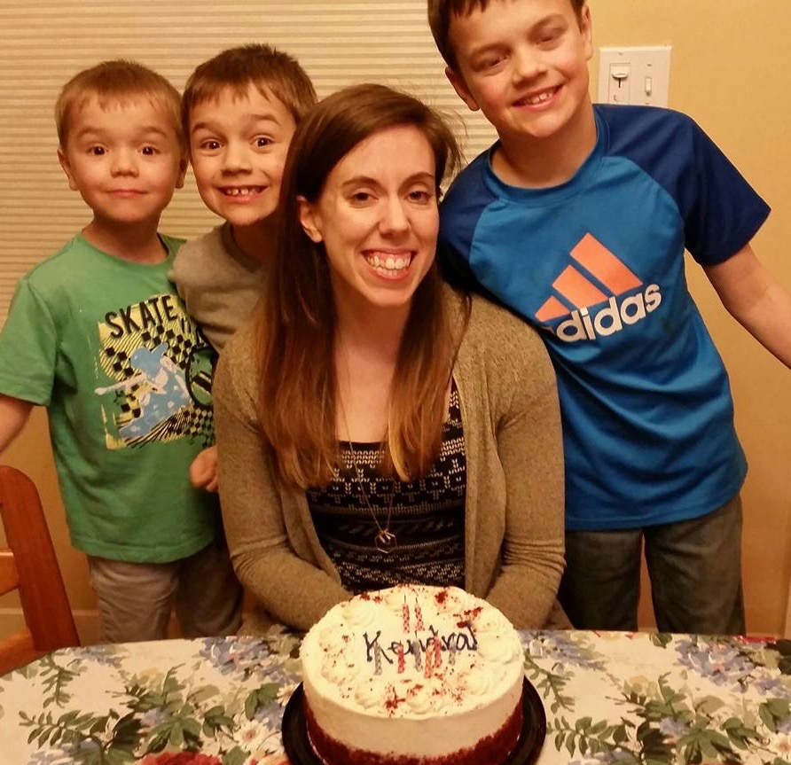
My nephews
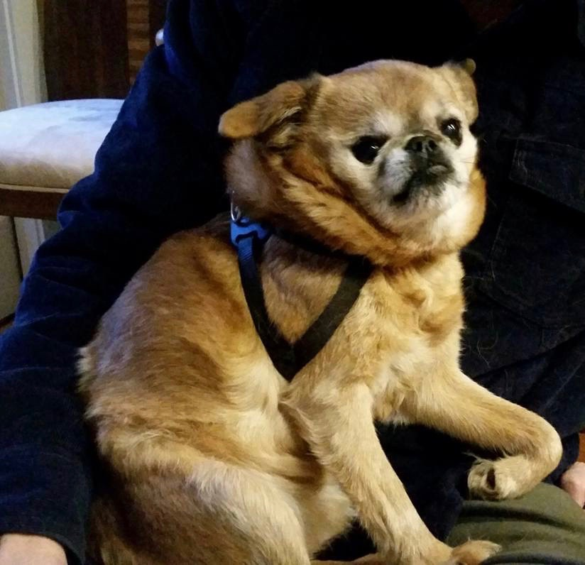
Dodger the Gremlin dog
Hobbies
Music
Ever since I was little, I've loved music. I started playing piano when I was 6, and studied piano in college. Even though I don't want to pursue a career as a musician, music will always be a part of my life.
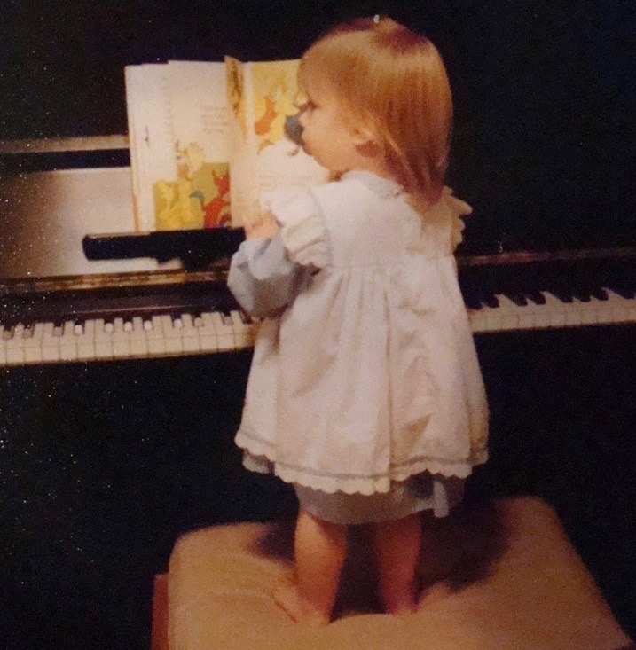
Bouldering
I started climbing about a year ago, and I can't get enough of it. I'm obsessed! So far I only boulder but I'd like to start sport climbing. I'm so excited to start climbing outside in one of the best climbing areas in the country!
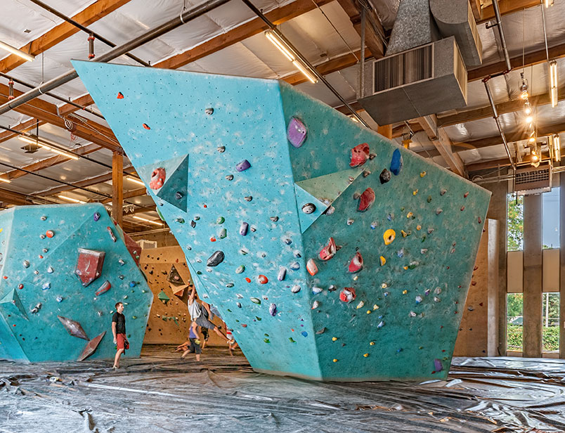
Travel
I love experiencing new places and cultures! I've had the opportunity to go to a few other countries, once as part of a study-abroad program in Madrid and a couple times with friends.